| ・ 平成24年度卒業論文発表会 (H25.02.21) | |||
去年はなんだか長い一日でした。予定通りのスケジュールで、今年はそれぞれの結果が伝わる発表だったと思います。やっぱり5分しかない質疑応答の時間でどれだけ的確に答えるかというのは難しいですね。まず簡潔に答えることが重要です。そして回答スライドがあるとかなり質問者とのやりとりがラクですね。なんでも準備が大事です。 |
|||
|
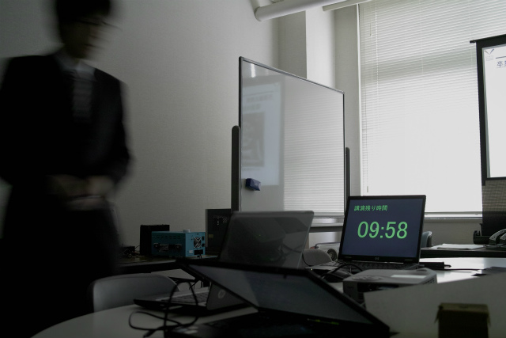
直前の練習 |
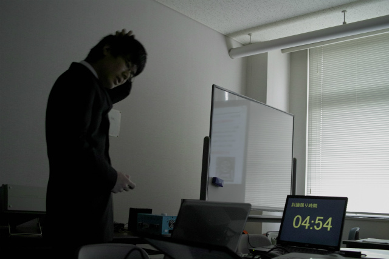
6秒過ぎたなぁ | ||
|
ついに10分に納めたH林くん |
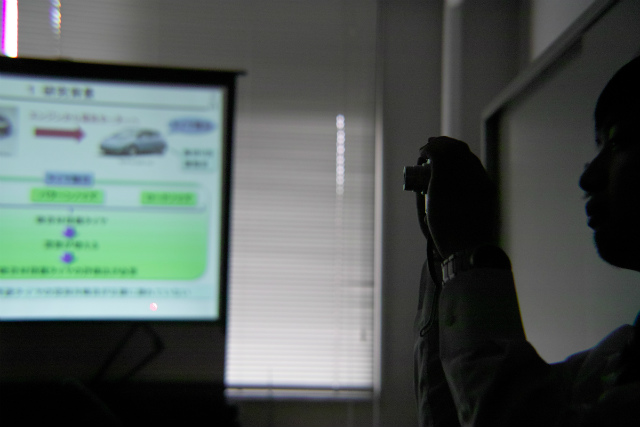
記念の写真を撮るF木くん | ||
|
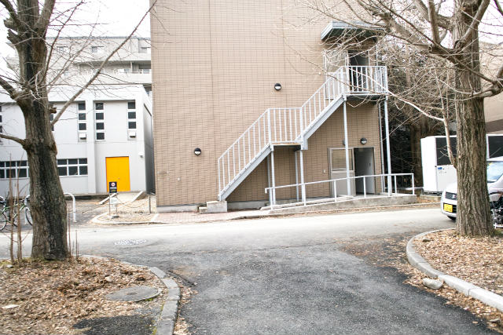
今年もここの2階の奥でした |
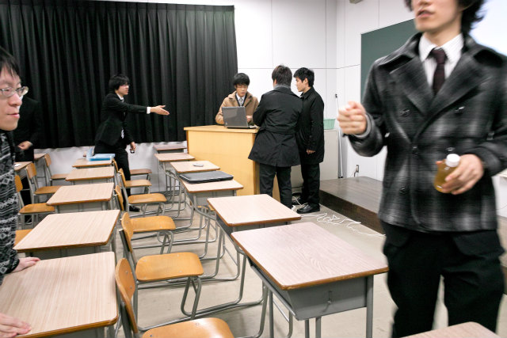
準備準備 | ||
|
K林くんから |
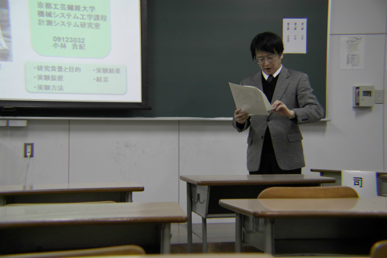
それでは始めます | ||
|
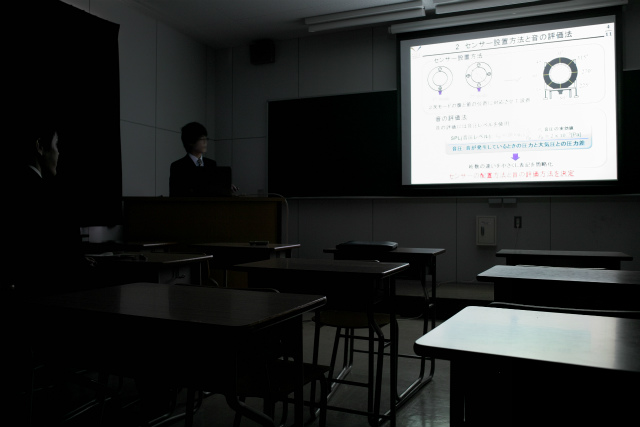
練習に練習を重ねただけありますね |
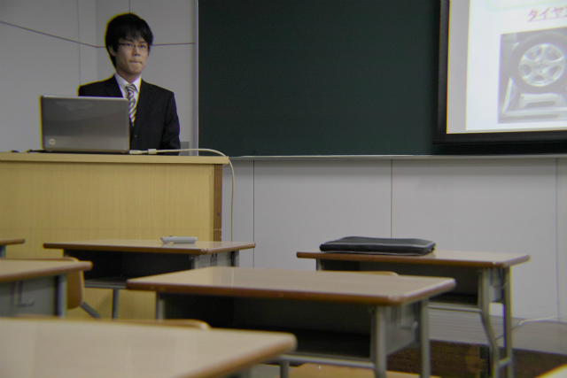
質疑応答中！ | ||
|
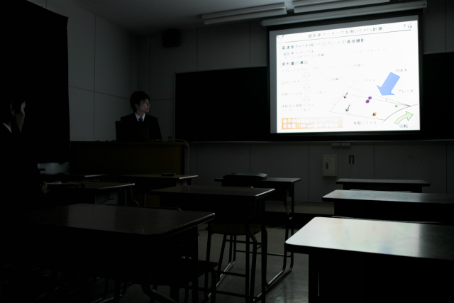
次はN島くん |
やばい？ | ||
|
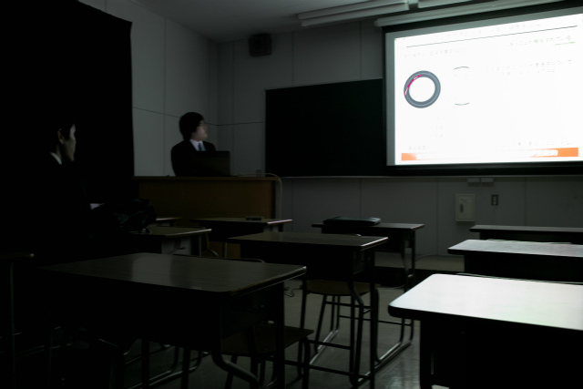
ムーくん |
回答スライドが炸裂！ | ||
|
H井くんのプレゼンわかりやすい |
回答スライドはどこだ？ | ||
|
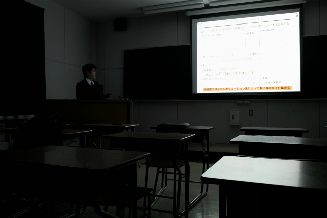
H林くん |
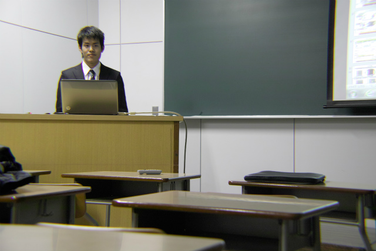
Deconvolutionはいいものだ！ | ||
|
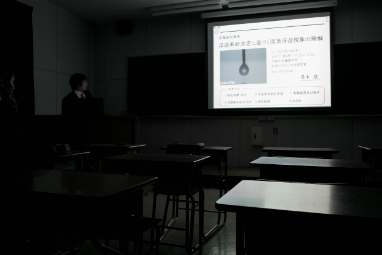
とりはF木くん |
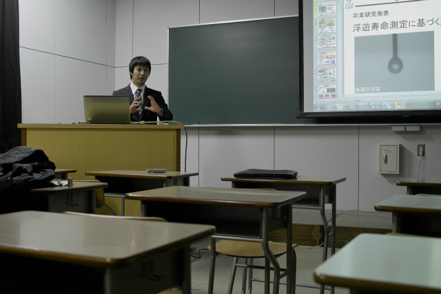
私には見えます、手元に浮遊する液滴がね！ | ||
|
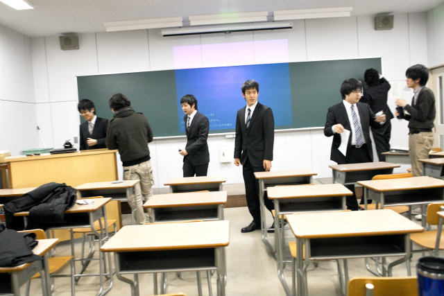
ウチが最後のセッション |
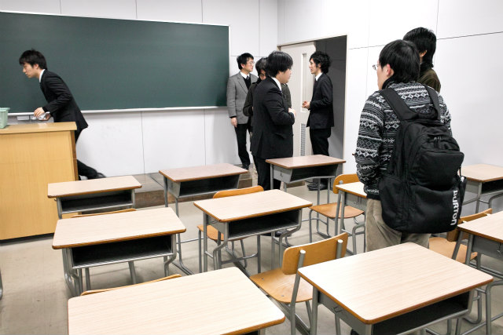
片付け終了！ | ||